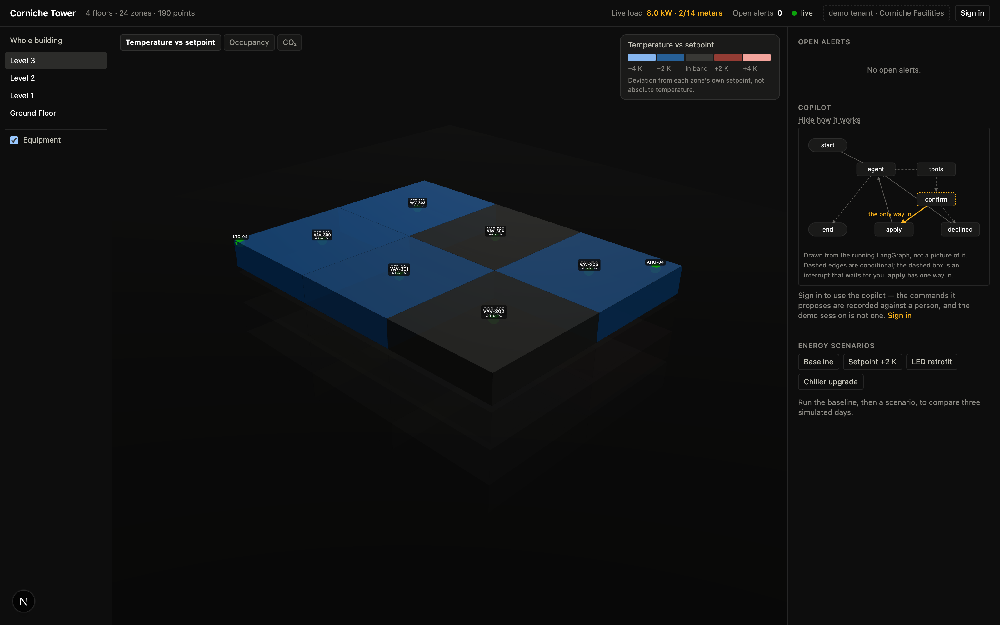

Every command holds for a window, then lapses on its own. A dead optimiser cannot hold a building.
The gateway reaches out for commands. There is no inbound connection into the building.
A pure safety envelope judges each command when it is requested, and again when the gateway collects it.
| zone | setpoint | requested by | state | applied | lapses |
|---|

npm run copilot:graph prints this graph from the code